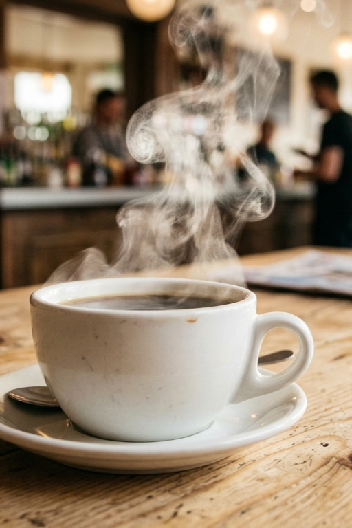

DONDE EL TIEMPO SE DETIENE

El Ritual
Es la primera taza humeante por la mañana, el aroma a pan recién horneado, la charla con un amigo o ese momento de tranquilidad a mitad de la tarde. No se trata de solo consumir, sino de experimentar y conectar.

El Grano
Representa nuestra búsqueda incansable de calidad, valorando el origen, el trabajo en la tierra y el proceso artesanal que transforma lo simple en algo extraordinario.
Lo que nos mueve
✦
Calidad sin concesiones
Seleccionamos cada ingrediente para ofrecerte siempre lo mejor.
✦
Respeto por el origen
Honramos el trabajo de los productores que cultivan nuestra materia prima.
✦
Comunidad
Queremos ser tu punto de encuentro, donde siempre te sientas bienvenido.

Una experiencia pensada para detenerse.